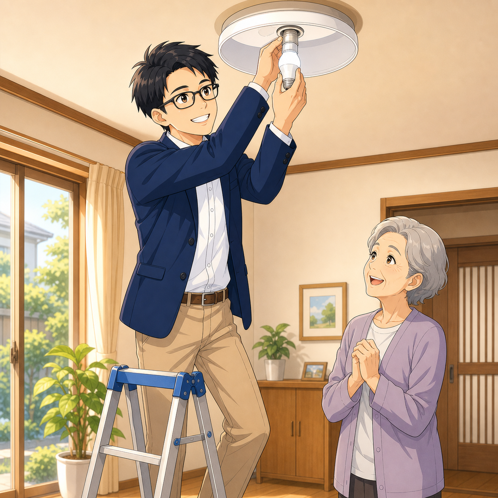
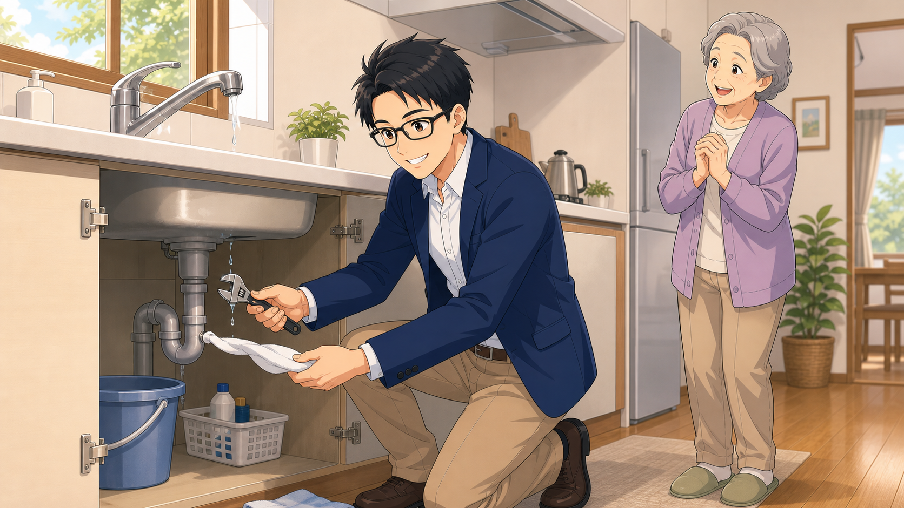

電気
照明、スイッチ、コンセントまわりなど、住まいの電気の小さな不安を確認します。
できること
内容によっては専門業者への依頼が必要な場合もあります。その前の状態確認や、どこに相談すべきかの整理もお手伝いします。
照明、スイッチ、コンセントまわりなど、住まいの電気の小さな不安を確認します。
蛇口の水漏れ、排水口のつまり、レバーの固さなど、毎日の使いにくさを相談できます。
家具の組み立て、ちょっとした力仕事、家の状態確認など、暮らしの困りごとに寄り添います。
住宅ローン、家計、不動産の売却・賃貸の初歩相談など、身近な入口としてお話を伺います。
資格と安心
「誰に聞けばいいかわからない」を、最初の一歩から整理します。現場経験と資格の知識を活かして、できること・専門業者へ任せるべきことを丁寧にお伝えします。
対応エリア
近くに住む人同士だからこそ、気軽に頼める安心感を大切にしています。火曜・水曜を中心に、伺える範囲で対応します。
相談例

高い場所の電球交換、照明器具の確認、スイッチまわりの不具合など。

蛇口、排水、キッチン、洗面まわりの違和感をまず確認します。
不動産や家計の初歩相談など、話しながら整理したい時にもどうぞ。
お問い合わせ
作業中は電話に出られない場合があります。お名前、ご相談内容、お住まいの地域をメッセージに残していただければ折り返します。